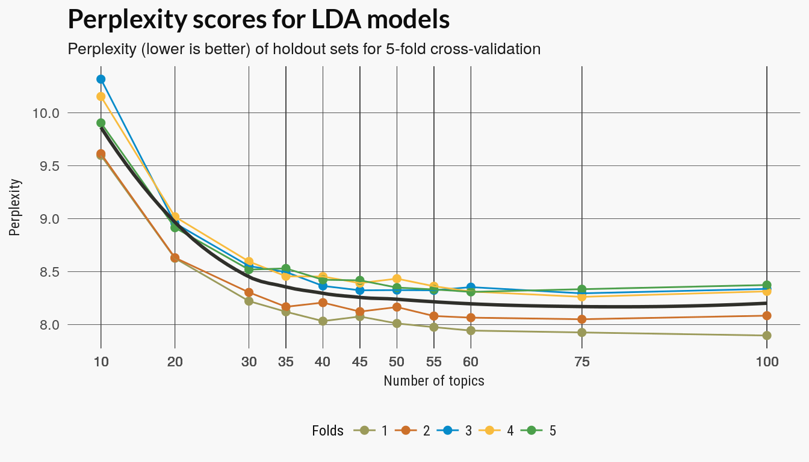
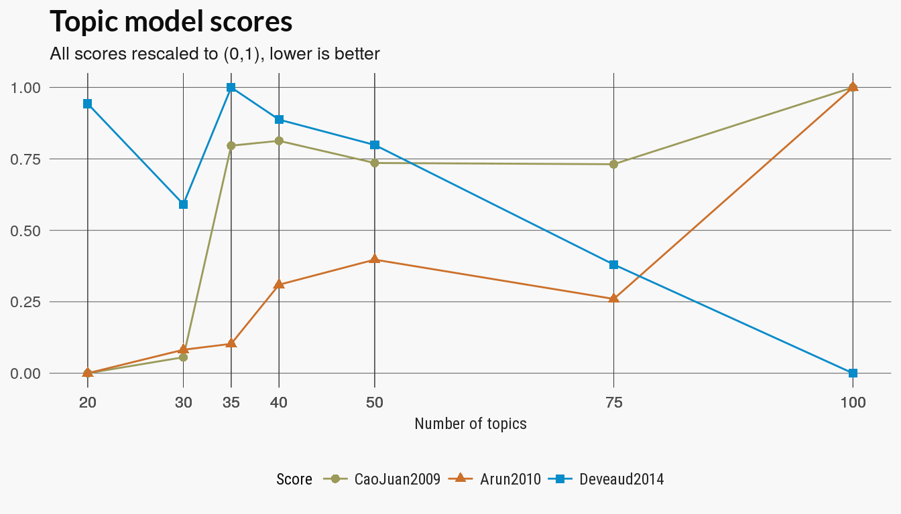
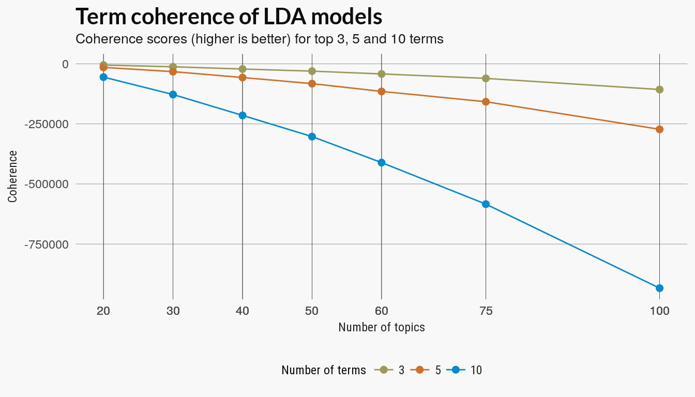
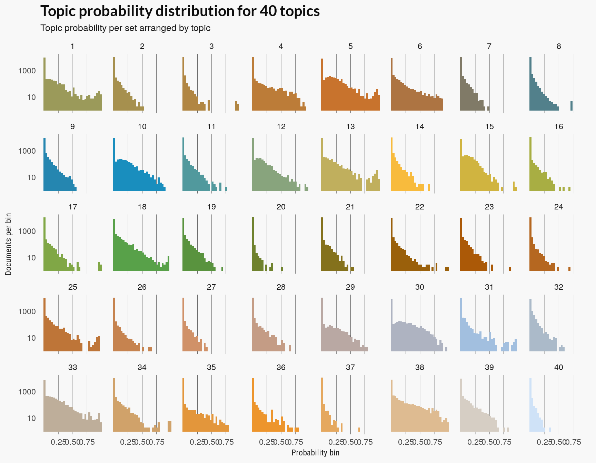

Last updated: 2017-09-13
Code version: 880af53
Up to this point, we’ve been using the full data set. (Actually, I’m not including some data so I should say, almost the full data set). Solving the LDA problem is computationally intensive, so for the remaining examples, we’re going to work with a very small sample of the data, just 250 sets of the 11,000 set total.
The LDA model learns to posterior distributions which are the optimization routine’s best guess at the distributions that generated the data. One method to test how good those distributions fit our data is to compare the learned distribution on a training set to the distribution of a holdout set. Perplexity is one measure of the difference between estimated topic distributions on documents.
We cast the set_word table to a document term matrix using the tidytext function. This returns adocumentTermMatrix object from the tm package. The LDA function we use is from the topicmodels package. It has a variational expectation maximation method and a Gibbs sampling method and I used the former.
Connecting to database
Assigning themes to theme_df
Assigning sets to sets_df
Retrieving dataset form db
Disconnecting from database
Assigning full set set inventories to 'set_colors'
Assigning values to total_words
Assigning tidy set and color dataframe to 'set_words'
Creating sparse document term matrix (tm-package) and assigning to 'dtm' perplexities <- readRDS(here::here("inst", "data", "perplexity_all.RDS"))Since I tested the running time on different set numbers I have seen that for this small number of sets there aren’t many topics. I’m putting a few more topic values \(k\) on the lower end but including some higher values to better see the trend.
Perplexity decreases with more topics but the rate of decrease changes around 10 to 15.
perplexities %>% ggplot(aes(n_topic, perplexity)) + geom_point(aes(colour = fold),
size = 2) + geom_line(aes(n_topic, perplexity, group = fold, colour = fold)) +
scale_color_manual(values = pal21(), guide = guide_legend(title = "Folds")) +
geom_smooth(se = FALSE, colour = "#2f2f2a") + scale_x_continuous(breaks = perplexities$n_topic) +
labs(x = "Number of topics", y = "Perplexity", title = "Perplexities scores for LDA models",
subtitle = "Perplexity (lower is better) of holdout sets for 5-fold cross-validation") +
legolda::theme_scatter(bgcol = "#f8f8f8")
ntopics <- c(20, 30, 35, 40, 50, 75, 100)
# Train LDA models on full data set
if (!from_cache) {
lda_models <- c(20, 30, 35, 40, 50, 75, 100) %>% purrr::map(LDA, x = dtm,
control = list(seed = 1))
}The ldatuning package has several other metrics of the quality of the topic models. I have modified the main function from the package to only return the scores. (The original package computes the models first and then the scores).
knitr::read_chunk(here::here("code", "ldatuning-scores.R"))lda_models <- readRDS(here::here("inst", "data", "lda_models_all.RDS"))
lda_metrics <- legolda::score_models(lda_models, dtm, topics = ntopics)
plot_lda_scores(lda_metrics, title)
What are these measures? I skimmed two of the references in the ldatuning package but I don’t understand them enough to give a brief interpretation of what the scores mean.
There is no agreement here although two measures change most between 5 and 15, although it is in opposite directions. Along with the perplexity numbers, it might suggest a value around 12. Here I’m informally assuming that we’re not gaining much information for \(k\) greater than 20.
There are several version of topic coherence which measure the pairwise strength of the relationship of the top terms in a topic model. Given some score where a larger value indicates a stronger relation ship between two words \(w_i, w_j\), a generic coherence score is the sum over the top terms in a topic model:
\[ \sum_{w_i, w_j \in W_t} \text{Score}(w_i, w_j), \] with top terms \(W_t\) for each topic \(t\).
The coherence score used in the SpeedReader coherence function just uses the internal coherence of the top terms. I compared the scores for the top 3, 5 and 10 terms.
coh_tbl <- readRDS(here::here("inst", "data", "coherence.RDS"))
coh_tbl <- coh_tbl %>% mutate(nterms = forcats::fct_inorder(nterms))
# TODO: sort number of terms in order
coh_tbl %>% ggplot(aes(x = ntopics, y = coherence, group = nterms)) + geom_point(aes(colour = nterms,
group = nterms), size = 2) + geom_line(aes(color = nterms)) + scale_color_manual(values = pal21(),
guide = guide_legend(title = "Number of terms")) + scale_x_continuous(breaks = coh_tbl$ntopics) +
labs(x = "Number of topics", y = "Coherence", title = "Term coherence of LDA models",
subtitle = "Coherence scores (higher is better) for top 3, 5 and 10 terms") +
theme_scatter(bgcol = "#f8f8f8")
We can also treat the LDA models as clustering the Lego sets. We can assign the Lego set to the color topic which has the highest value for that document; This is the topic that is most responsible for generating the document.
The previous plot should indicate whether documents are getting strongly associated with a topic or if topics are to evenly distributed over all documents.
In this next section, I cluster documents using both kmeans and LDA topics. Kmeans is intended as a simple baseline clustering method and sets are clustered based on their term vectors weighted by TF-IDF scores.
The clusters scores include Rand, adjusted Rand, Folkes-Mallow and Jaccard scores. All try to score a clustering on how well the discovered labels match the assigned labels – here the root_id of the set. The Rand index assigns a score based on the number pairwise agreement of the cluster labels with the original labels. The other measures are somewhat similar in approach.
The scores behave similarly for both clustering methods but I’m not sure the results are helpful for determining the best \(k\). These labels might not match actual color themes and some theme ids may correspond well to a color topic while other themes may have no coherent color scheme.
Another way to evaluate the quality of the topic models is to see how well do. This example follows a this section from the tidy text mining book.
The topic model’s ‘gamma’ matrix has the distribution of topics over models. The plot below visualizes this as how the topics are distributed over the probability bins for each topic. If too many topics have sets or documents in the low probability bins then you may have too high a number of topics since few documents are being strongly associated with any topic.
For our lego sets at 10 topics, the number of documents in high probability bins is already getting sparse while at 5 the documents are better distributed over each topic. For most topics, only the first 2-5 terms were closely related to the topic so it is not surprising that the 10 term coherence drops off quickly. In any case, the coherence measure doesn’t tell us much. If we assume that only 3 terms are significant the plot does show there is not too much decline in coherence up to \(k = 10\).
Following the tidytext book, look at the distribution over topics.
